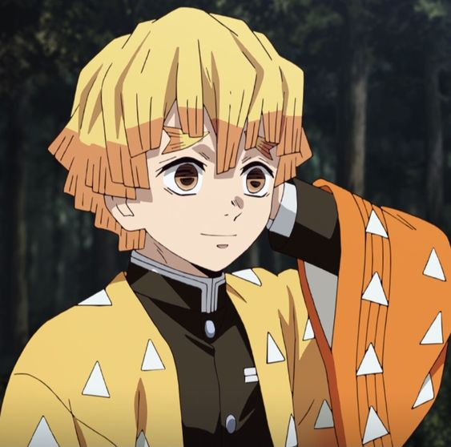

Characters/voice
Agatsuma, Zenitsu

-
- Shimono, Hiro (Japanese)
- Le, Aleks (English)
- Singh, Mosè (Italian)
- Petrick, Dirk (German)
- Tatini, Adrian (Portuguese BR)
- Baudouin, Maxime (French)
- Martínez Castañer, Xavier (Spanish)
- Piedra, José Luis (Spanish)
Hashibira, Inosuke

-
- Matsuoka, Yoshitsugu (Japanese)
- Papenbrook, Bryce (English)
- Schmidt-Foß, Dennis (German)
- De Mojana, Matteo (Italian)
- Silva, Dláigelles (Portuguese BR)
- Lemoine, Christophe (French)
- Huerta, Uraz (Spanish)
- Itchart, Eduard (Spanish)
Kamado, Nezuko

-
- Kitou, Akari (Japanese)
- Trott, Abby (English)
- Cherubelli, Laura (Italian)
- Meynen, Julia (German)
- Guarnieri, Isabella (Portuguese BR)
- Rojas, Annie (Spanish)
- Andrés, Eva (Spanish)
- Maillet, Margaux (French)
Kamado, Tanjirou

-
- Hanae, Natsuki (Japanese)
- Satou, Satomi (Japanese)
- Aguilar, Zach (English)
- Novara, Renato (Italian)
- Clark, Allegra (English)
- von Jascheroff, Constantin (German)
- Ratsito, Enzo (French)
- Figueira, Daniel (Portuguese BR)
- Navarro, Marcel (Spanish)
- Bastidas, Iván (Spanish)
- Homs, Emmylou (French)
- Youwuyueshan (Mandarin)
Enmu

-
- Hirakawa, Daisuke (Japanese)
- McDonald, Landon (English)
- Valezano, Fabrizio (Italian)
- Gama, Lucas (Portuguese BR)
- de Bodinat, Anatole (French)
- Castañeda, Arturo (Spanish)
Haganezuka, Hotaru

-
- Namikawa, Daisuke (Japanese)
- Daymond, Robbie (English)
- Balzarotti, Marco (Italian)
- Araújo, Márcio (Portuguese BR)
- Kazazian, Thierry (French)
- Lontzek, Peter (German)
- Pérez, Manuel (Spanish)
Hand Demon

-
- Toyosaki, Aki (Japanese)
- Koyasu, Takehito (Japanese)
- Thornton, Kirk (English)
- DiCicco, Jessica (English)
- Prata, Patrizio (Italian)
- Caodaglio, Marcelo (Portuguese BR)
- Muniz, Mana (Portuguese BR)
- Casanova, Pascal (French)
- Moya, Rubén (Spanish)
- Deutelmoser, Matthias (German)
Himejima, Gyoumei

-
- Sugita, Tomokazu (Japanese)
- Freeman, Crispin (English)
- Brusamonti, Matteo (Italian)
- Bretonnière, Marc (French)
- Reyero, Gerardo (Spanish)
- Júnior, Francisco (Portuguese BR)
- Doering, Alexander (German)
Iguro, Obanai

-
- Suzumura, Kenichi (Japanese)
- Kimerer, Erik (English)
- Pozzi, Stefano (Italian)
- Garcia, Marcelo (Portuguese BR)
- Koukissa-Barney, Simon (French)
- Cataño, Arturo (Spanish)
- Sander, Tim (German)
Kamado, Tanjuurou

-
- Miki, Shinichiro (Japanese)
- Thornton, Kirk (English)
- Marchetti, César (Portuguese BR)
- Fattori, Alessandro (Italian)
- Bretonnière, Marc (French)
- Coria, Armando (Spanish)
- von Jascheroff, Constantin (German)
- Neumann, Viktor (German)
Kanroji, Mitsuri

-
- Hanazawa, Kana (Japanese)
- Rusconi, Stefania (Italian)
- Buckland, Kira (English)
- Desplaces, Catherine (French)
- Souza, Patrícia (Portuguese BR)
- Gedeón, Melissa (Spanish)
- May, Moira (German)
Kanzaki, Aoi

-
- Ehara, Yuri (Japanese)
- Buhr, Reba (English)
- Evangelista, Mariana (Portuguese BR)
- Soares, Clara (French)
- Aceves, Miriam (Spanish)
- Bonanomi, Giada (Italian)
- Weiß, Jennifer (German)
Kibutsuji, Muzan

-
- Seki, Toshihiko (Japanese)
- Chun, Greg (English)
- Moneta, Claudio (Italian)
- Matt, Norman (German)
- Marques, Glauco (Portuguese BR)
- Tua, Lionel (French)
- Suárez, Luis Leonardo (Spanish)
Kochou, Kanae

-
- Kayano, Ai (Japanese)
- Hoffman, Bridget (English)
- Tamburello, Martina (Italian)
- Keita, Fily (French)
- Sánchez, Georgina (Spanish)
- Matta, Bruna (Portuguese BR)
- Jakobeit, Giuliana (German)
Kochou, Shinobu

-
- Hayami, Saori (Japanese)
- Harlacher, Erika (English)
- Simonelli, Federica (Italian)
- Keplmair, Tatiane (Portuguese BR)
- Girard, Nadine (French)
- Hernández, Cristina (Spanish)
- Koschny, Maria (German)
Kuwajima, Jigorou

-
- Chiba, Shigeru (Japanese)
- DeMita, John (English)
- Romanò, Sergio (Italian)
- Barney, Jean (French)
- Silveira, Carlos (Portuguese BR)
- Pan, Michael (Spanish)
- Vega, Jaime (German)
Kyougai

-
- Suwabe, Junichi (Japanese)
- Blum, Steven (English)
- Andreozzi, Ruggero (Italian)
- Lobue, Luiz Antônio (Portuguese BR)
- Le Madic, Yann (French)
- Cervantes, Enrique (Spanish)
- Gavrilis, Marios (German)
Makomo

-
- Kakuma, Ai (Japanese)
- Bartley, Ryan (English)
- Maniglio, Giulia (Italian)
- Vidal, Sicília (Portuguese BR)
- Koukissa-Barney, Simon (French)
- Mendoza Ortiz, Pamela (Spanish)
- Tkotsch, Sarah (German)
Mother Spider Demon

-
- Koshimizu, Ami (Japanese)
- Clark, Allegra (English)
- Franzoso, Giulia (Italian)
- Paulita, Agatha (Portuguese BR)
- Gawlich, Cathlen (German)
Murata

-
- Miyata, Kouki (Japanese)
- Dao, Khoi (English)
- Volpato, Felipe (Portuguese BR)
- Dos Santos, David (French)
- Martínez Torizes, Eduardo (Spanish)
- Strobl, Amadeus (German)
Nakahara, Sumi

-
- Mano, Ayumi (Japanese)
- Marie, Michelle (English)
- Clerici, Serena (Italian)
- Carvalho, Nina (Portuguese BR)
- Vigne, Cécile (French)
Rengoku, Kyoujurou

-
- Hino, Satoshi (Japanese)
- Whitten, Mark (English)
- La Greca, Andrea (Italian)
- Antoine, Adrien (French)
- Maia, Philippe (Portuguese BR)
- Daayán, Irwin (Spanish)
- Morgenstern, Tommy (German)
Rui

-
- Uchiyama, Kouk (Japanese)
- Kametz, Billy (English)
- Rotolo, Andrea (Italian)
- Grull, Hervé (French)
- Chesman, Yuri (Portuguese BR)
- García Huerta, Sebastián (Spanish)
- Turba, David (German)
Sabito

-
- Kaji, Yuuki (Japanese)
- Mittelman, Max (English)
- Zanandrea, Federico (Italian)
- Redler, Jim (French)
- Guarnieri, Caio (Portuguese BR)
- González, Dalí (Spanish)
- Richter, Ricardo (German)
Shinazugawa, Genya

-
- Okamoto, Nobuhiko (Japanese)
- Robinson, Zeno (English)
- Bressan, Mattia (Italian)
- Schoumsky, Antoine (French)
- Andreatto, Rodrigo (Portuguese BR)
- Trejo Rodríguez, Osvaldo (Spanish)
Shinazugawa, Sanemi

-
- Seki, Tomokazu (Japanese)
- Tang, Kaiji (English)
- Fattori, Alessandro (Italian)
- Ferrette, Damien (French)
- Assali, Heitor (Portuguese BR)
- Balcázar, Galo (Spanish)
- Schulz, Sebastian (German)
Susamaru

-
- Komatsu, Mikako (Japanese)
- Williams, Sarah (English)
- Francese, Chiara (Italian)
- Frenchel, Vivian; Baradat, Claire (Portuguese BR)
- Daayán, Irwin (Spanish)
- Hannak, Nicole (German)
Takada, Naho

-
- Kuwahara, Yuuki (Japanese)
- Woods, Kimberly (English)
- Mazza, Anna (Italian)
- Keita, Fily (French)
- Carvalho, Nina (Portuguese BR)
Tamayo

-
- Sakamoto, Maaya (Japanese)
- Post, Laura (English)
- Magnaghi, Debora (Italian)
- Lima, Márcia Regina (Portuguese BR)
- Douet, Danièle (French)
- Guerrero, Dulce (Spanish)
- Stürzbecher, Ulrike (German)
Terauchi, Kiyo

-
- Yamashita, Nanami (Japanese)
- Lastra, Jackie (English)
- Valenti, Federica (Italian)
- Pires, Bruno (Portuguese BR)
- Marié, Émilie (French)
- Infante, Elizabeth (Spanish)
Tokitou, Muichirou

-
- Kawanishi, Kengo (Japanese)
- Burns, Griffin (English)
- Sansalone, Dario (Italian)
- Horta, Rodrigo (Portuguese BR)
- Moreau, Clément (French)
- Corona, Armando (Spanish)
- Artajo, Nicolas (German)
Tomioka, Giyuu

-
- Sakurai, Takahiro (Japanese)
- Bosch, Johnny Yong (English)
- Vivolo, Ezio (Italian)
- Llorca, Juan (French)
- Sauer, André (Portuguese BR)
- Winslow, Marc (Spanish)
- Sablik, Nico (German)
Tsuyuri, Kanao

-
- Ueda, Reina (Japanese)
- Knickerbocker, Brianna (English)
- Bonfitto, Sabrina (Italian)
- Mitsching, Lisa (German)
- Giudice, Michelle (Portuguese BR)
- Lacombe, Lila (French)
- Aguilar, Montserrat (Spanish)
Ubuyashiki, Kagaya

-
- Morikawa, Toshiyuki (Japanese)
- Mercer, Matthew (English)
- Calatroni, Jacopo (Italian)
- Mazzei, Wilken (Portuguese BR)
- Feld, Oliver (German)
- Dutkiewicz, Idzi (Spanish)
- Choël, Bruno (French)
Urokodaki, Sakonji

-
- Ootsuka, Houchuu (Japanese)
- Chalmers, Brook (English)
- Zucca, Mario (Italian)
- Romero, Cássius (Portuguese BR)
- Herson-Macarel, Éric (French)
- Sanz, Boris (Spanish)
- Klebsch, Klaus-Dieter (German)
Uzui, Tengen

-
- Konishi, Katsuyuki (Japanese)
- Chase, Ray (English)
- Merluzzo, Maurizio (Italian)
- Souto, Clécio (Portuguese BR)
- Tissier, Gilduin (French)
- Basurto, Alfredo Gabriel (Spanish)
- Knauer, Tim (German)
Yushirou

-
- Yamashita, Daiki (Japanese)
- McCarley, Kyle (English)
- Calatroni, Jacopo (Italian)
- Pejon, Marcus (Portuguese BR)
- Prévost, Jérémy (French)
- Vélez Jr., Humberto (Spanish)
- Klebsch, Klaus-Dieter (German)
Staff
- Fujio, Akifumi (Producer)
- Kondou, Hikaru (Producer, Sound Director, Series Composition)
- Miyake, Masanori (Producer)
- Takahashi, Yuuma (Producer)
- Sotozaki, Haruo (Director, Episode Director, Storyboard, Key Animation, Animation Director)
- Hosokawa, Hideki (Episode Director)
- Itou, Yuuki (Episode Director, Storyboard)
- Majima, Takahiro (Episode Director)
- Nonaka, Takuya (Episode Director, Storyboard, 2nd Key Animation)
- Shirai, Toshiyuki (Episode Director, Storyboard, 2nd Key Animation, Key Animation)
- Suhara, Takashi (Episode Director, Storyboard)
- Takahashi, Ken (Episode Director)
- Takeuchi, Masashi (Episode Director, Storyboard)
- Terao, Yuuichi (Episode Director, Storyboard, Director of Photography, Key Animation)
- Barney, Magali (Script)
- McCarley, Kyle (Script)
- Zeiger, Christian (Script, ADR Director)
- Kawajiri, Yoshiaki (Storyboard)
- Uda, Akihiko (Storyboard, Key Animation, Animation Director, 2nd Key Animation, Assistant Animation Director)
- Eguchi, Ryo (Theme Song Arrangement)
- FictionJunction (Theme Song Performance)
- Kajiura, Yuki (Theme Song Composition, Theme Song Arrangement, Theme Song Lyrics, Music)
- Kusano, Kayoko (Theme Song Composition)
- LiSA (Theme Song Lyrics, Theme Song Performance)
- ufotable (Theme Song Lyrics)
- Abe, Nozomu (Key Animation)
- Akazawa, Yuuji (Sound Effects)
- Atsumi, Tomoya (Key Animation)
- Doi, Shimon (Key Animation)
- Ebisawa, Kazuo (Background Art)
- Etou, Kouji (Art Director, Background Art)
- Fukumoto, Ikumi (2nd Key Animation)
- Gotouge, Koyoharu (Original Creator)
- Hiyama, Akira (Production Coordination)
- Hoshino, Reika (Key Animation)
- Hozumi, Ayaka (Key Animation)
- Iwakami, Atsuhiro (Planning)
- Izawa, Tamami (Key Animation)
- Jinguuji, Manabu (Associate Producer)
- Kajiyama, Youko (Chief Animation Director, Key Animation, Character Design)
- Kamino, Manabu (Editing)
- Kikuchi, Hanako (Key Animation)
- Kikuchi, Mika (Chief Animation Director, Key Animation, Character Design)
- Kimura, Masaru (Key Animation)
- Kojima, Ayumi (Background Art)
- Konno, Akiko (Key Animation)
- Kunihiro, Masayuki (Key Animation)
- Le Madic, Yann (ADR Director)
- Maeda, Yoshihiro (Key Animation)
- Maki, Marina (2nd Key Animation, Key Animation)
- Masui, Naoko (2nd Key Animation, Key Animation)
- Matsushima, Akira (Character Design, Animation Director)
- Miyake, Maiko (Animation Director)
- Motegi, Takayuki (Animation Director)
- Nagamori, Masato (Key Animation, Assistant Animation Director, Animation Director)
- Nakano, Hiroyuki (Planning)
- Natsuki, You (In-Between Animation)
- Nishimichi, Takuya (Key Animation)
- Obana, Ryota (2nd Key Animation)
- Obunai, Mitsuru (Key Animation)
- Ogasawara, Atsushi (Key Animation, Animation Director)
- Okada, Takeshi (Planning)
- Onizawa, Kayo (Animation Director, Key Animation)
- Oomae, Yuuko (Color Design)
- Ooyoshi, Makoto (Planning)
- Romero, Cássius (ADR Director)
- Satou, Miyuki (Character Design)
- Satou, Shigenobu (Planning)
- Sekino, Takeshi (Background Art)
- Semeraro, Luca (ADR Director)
- Serai, Yukako (2nd Key Animation)
- Shiina, Gou (Music)
- Shimizu, Keita (Key Animation)
- Shimojima, Makoto (Key Animation)
- Shiojima, Yuka (Key Animation, Animation Director)
- Staley, Steve (ADR Director)
- Sudou, Tomonori (Key Animation)
- Takeuchi, Yukari (Animation Director, Key Animation)
- Tamori, Yuuki (Key Animation)
- Tanaka, Aya (Key Animation, 2nd Key Animation, In-Between Animation)
- Tsukioka, Yuuki (Planning)
- Tsuzuki, Moe (Animation Check, Assistant Animation Director, In-Between Animation, Animation Director, 2nd Key Animation)
- Uchiyama, Midori (2nd Key Animation)
- Umigishi, Mayuko (Key Animation, 2nd Key Animation)
- Washida, Toshiya (Key Animation)
- Winslow, Marc (ADR Director)
- Yamaoka, Shun (2nd Key Animation, Key Animation)
- Yanaka, Masaru (Art Director, Principle Drawing, Background Art)
- Yatsu, Miyako (Key Animation)